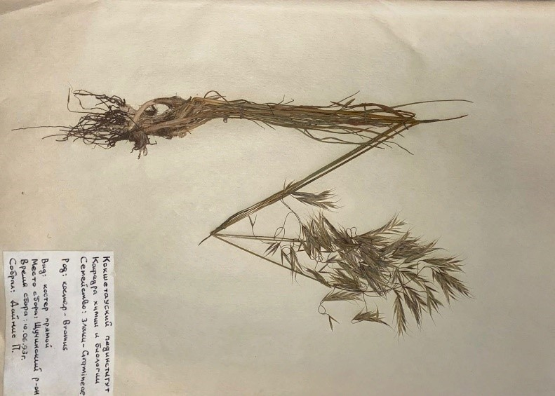

Қылтықсыз арпабас - Bromus inermis L - Костер безостый

Биологиялық сипаттамасы: Көп жылдық шөптесін өсімдік. Биіктігі 40 – 120 см құрайды. Тамыр сабағы тармақты, шым түзеді. Сабағы тік, кейде түптеніп өседі. Жапырағы жалпақ, кейде ширатыла түскен 4 – 9 мм, бет жағы түкті болады. 5 – 12 жасыл немесе күлгін сұр гүлдері сыпыртқы гүлшоғырына топталған, ұзындығы 10 – 15 см. Масағының ұзындығы 15 – 30 мм, ені 3 – 5 мм. Маусым — шілде айларында гүлдейді. Дәні ірі (8 – 12 мм), ыстық пен суыққа төзімді. Құнарлы мал азығы. Кейбір жерлерде қолдан егіледі. Ерте көктемде шығады, га-сынан 30 – 610 ц пішен шабылады.
Таралу аймағы:Еуропада, Орталық және Шығыс Азияда және Солтүстік Америкада кең таралған. Еділ бойында, Батыс және шығыс Сібірде кездеседі .Ол шалғындарда, су қоймаларының жағасында, сирек ормандарда, жолдарда кездеседі. Қазақстанның барлық жерінде (орманды, орманды дала, дала аймағында) кездеседі. Әсіресе, өзен алқабындағы шабындықтарда, егістіктен қалған жерлерде, таудың биік белдеуінде көп өседі.